Four Traffic Speed Deflectometer (TSD) Myths: Confirmed, Busted, or Plausible?
What theoretical simulations tell us about FWD-TSD relationships, slope integration, multi-axle modeling, and modulus backcalculation
TSD Article Series · TSD-01
This article is based on the presentation I gave at the 2026 FWD User Group (FWDUG). The FWDUG presentation can be downloaded from my ResearchGate site: FWDUG_Presentation.
One distinction I need to make before we jump into the article. In this article, a Traffic Speed Deflection Device (TSDD) is defined as any equipment designed and built to measure pavement deflection at high speeds, regardless of the technology used. Traffic Speed Deflectometer (TSD), on the other hand, is one type of TSDD that specifically uses doppler lasers for measuring pavement surface velocity (or deflection velocity). So, TSDDs include TSD, Rolling Wheel Deflectometer (RWD), Raptor, etc. That extra “D” matters!
1. Introduction
Over the past decade or so, I have spent considerable time working with Traffic Speed Deflectometer (TSD) theory and data, developing computational tools for simulating pavement response under moving loads, and asking questions about assumptions that are commonly made when interpreting TSD data.
These are also some of the questions I received most frequently from my colleagues. While some of them understood what I was verbally telling them, some others struggled to follow my verbal explanation without any visual proof in front of them. So, I decided to call these questions (that I receive the most regarding TSDs) the 4 myths and wanted to explain them with some of the theoretical proofs that I generated over the past year or so.
Several of these questions have appeared in bits and pieces throughout my LinkedIn posts, and I will provide the links to those posts where applicable. Here are the 4 myths and I will provide you my current conclusions on whether they are Confirmed, Busted, or Plausible in the remainder of this article. These questions may initially seem independent, but they are not. The answer to one myth also helps set up the next.
| TSD Myths | |
|---|---|
| Myth #1 | Pavement deflection under moving load (e.g., TSDD) has good correlation with deflection under impact load (e.g., FWD). |
| Myth #2 | TSD deflection slopes can be integrated to provide deflections. |
| Myth #3 | You MUST consider all TSDD axles (or tires) in your model. |
| Myth #4 | TSD deflection slopes can be used for backcalculating layer moduli, including subgrade modulus. |
Note that there is a PowerPoint file that I used to present this material at the 35th Falling Weight Deflectometer User Group (FWDUG) meeting that was held in September, 2026. This article will closely follow the material that I had in that presentation. The original presentation, including the complete slide deck and animations, is available on my ResearchGate website.
2. Scope and Definitions
The analyses presented here are limited to continuous pavement systems, specifically flexible pavements. Joints and other pavement discontinuities are not considered. My conclusions will be 100% based on theoretical simulations, i.e., no field data was used in the analyses presented in this article.
For TSDs equipped with doppler lasers, the deflection slope is defined as deflection velocity (measured by the doppler lasers) divided by vehicle speed:
\[ S(x) = \frac{V_{def}}{V_{v}} \tag{1}\]
where S is deflection slope, Vdef is the measured deflection velocity and Vv is vehicle speed.
It is emphasized that the relationship in Equation 1 only holds for “Continuous Pavements”. For pavements with joints or any other discontinuities, this relationship doesn’t necessarily hold true and I will try to develop another article on this subject in the future. But for this article, we are only interested in continuous pavements that Equation 1 can be used for calculating the deflection slope.
3. Myth #1 — Pavement deflection under moving load (e.g., TSDD) has good correlation with those under impact load (e.g., FWD)
At first glance, this may sound reasonable. Both the Falling Weight Deflectometer (FWD) and Traffic Speed Deflection Devices (TSDDs) apply a known load to a pavement surface and measure the resulting deflection. If both devices are evaluating pavement structural condition, it is tempting to expect the measured deflections to correlate well.
Mechanically, however, TSDDs (i.e., moving loads) and FWDs (i.e., impact loads) are totally different. According to a paper that my friend, Doug Steele (1968-2023) and I co-authored, some of the differences in loading characteristics include the following (Steele et al., 2021).
Loading mode: impact versus moving load
Loading rate: speed effects
Load configuration: single plate versus dual tires
Half-axle versus full-axle configurations
Constant target loads versus dynamic variations
For the above-referenced study, Doug had asked me to make a lot of ViscoWave runs for both the FWD and the Rolling Wheel Deflectometer (RWD) – A TSDD that we were developing at the time. The pavement structures we simulated at the time, are shown in Table 1.
Table 1. Pavement layer properties studied in the previous study by Steele et al. (2021).
| Layer | Thickness (in) | Modulus (ksi) | Temperature (˚F) |
|---|---|---|---|
| Asphalt Concrete | 4, 8, 12, and 16 | Sigmoidal Fcn | 50, 70, and 90 |
| Base | 8, 10, and 12 | 40, 60, and 80 | N.A. |
| Subgrade | 120 | 10, 20, and 30 | N.A. |
To provide some sample results we got from the above study, Figure 1 and Figure 2 show the pavement deflections differ under different loading modes and different loading configurations, respectively. Yes, the deflections are different, but they are not that different. So, were there any correlations between the FWD and RWD deflections?
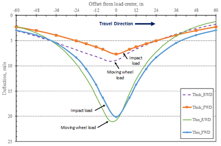
Figure 1. Effect of loading mode on pavement deflection (Steele et al., 2021).
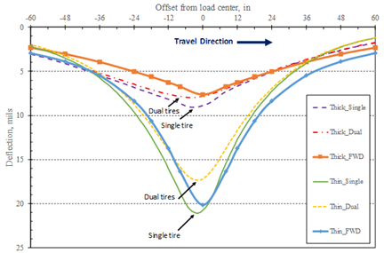
Figure 2. Effect of loading configuration on pavement deflection (Steele et al., 2021).
Figure 3 shows the correlation between the maximum deflections obtained under the FWD (9-kip peak load) and the RWD (18-kip single axle with dual tires, i.e., total of 4 tires traveling at 60 mph). Well… Not bad, right? The figure clearly shows a decent correlation with an impressive R2 value of 0.85! But is this the end of the story? It is not. Let’s revisit this in this myth.
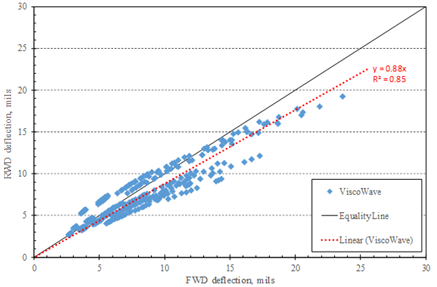
Figure 3. Comparison of maximum FWD and RWD deflections (Steele et al., 2021).
3.1 Revisiting the comparison
Looking back at Table 1, you may think Doug and I had covered a pretty broad range of pavement structures. The Asphalt Concrete (AC) thickness ranged from 4.0 to 16.0 in. and the base thickness ranged from 8.0 to 12.0 in. What about subgrade? Table 1 shows that the subgrade thickness was fixed at 120.0 in. This means that there was a stiff bedrock at 132.0 to 148.0 in. below the pavement surface depending on the AC and base thicknesses. Is this subgrade thickness of 120.0 in. adequate for all pavements we see in the field? My experience says NO, and this is what we are about to revisit.
For the myths to be presented in this article, I generated 1,770 pavement structures for simulation. Table 2 shows the thickness and modulus of the pavement layers. Note that I intentionally fixed the AC and base thicknesses so that I can highlight the influence of subgrade.
Table 2. Pavement layer properties used for the TSD myths in this article.
| Layer | Thickness (in.) | Modulus (ksi) |
|---|---|---|
| Asphalt Concrete | 8 (fixed) | 100–500 |
| Base | 10 (fixed) | 10–100 |
| Subgrade | 100–300 | 2–18 |
For Myth #1, the FWD responses (i.e., deflection time histories) were obtained from ViscoWave (https://github.com/leehyu20/ViscoWave) by simulating an impact load of 9-kip peak load with a duration of 25-ms applied on a 12-in diameter loading plate. The moving-load responses were obtained from DSteele by simulating an 18-kip single axle with dual tires (i.e., 4 tires total with 4.5-kip load on each tire).
Here is an animation I generated to show the TSDD deflections and the FWD time histories for all 1,770 pavements.
Animation 1. TSDD Deflection vs. FWD Time History (Animation 1 LinkedIn Post).
From the above results, I extracted the deflections at several different offsets (0, 8, 12, 18, 24, 36, 48, 60, and 72 in.) from the center of the FWD load plate as well as from the center of two dual tires of TSDD. Here is the animation that shows how these deflections at different offsets compare. Watch carefully when the subgrade thickness and/or modulus changes.
Animation 2. 1:1 Comparison of FWD and TSDD deflections (Animation_2_LinkedIn_Post).
Did you see what happened? Here is a summary of what I saw. When AC or base modulus changes for a given subgrade condition (i.e., thickness and modulus), the FWD-vs-TSDD relationship generally moves in a relatively consistent direction as indicated in Figure 4. For example, all the points move around the red curve for a given subgrade condition but the points will move around the green curve for a different subgrade condition.
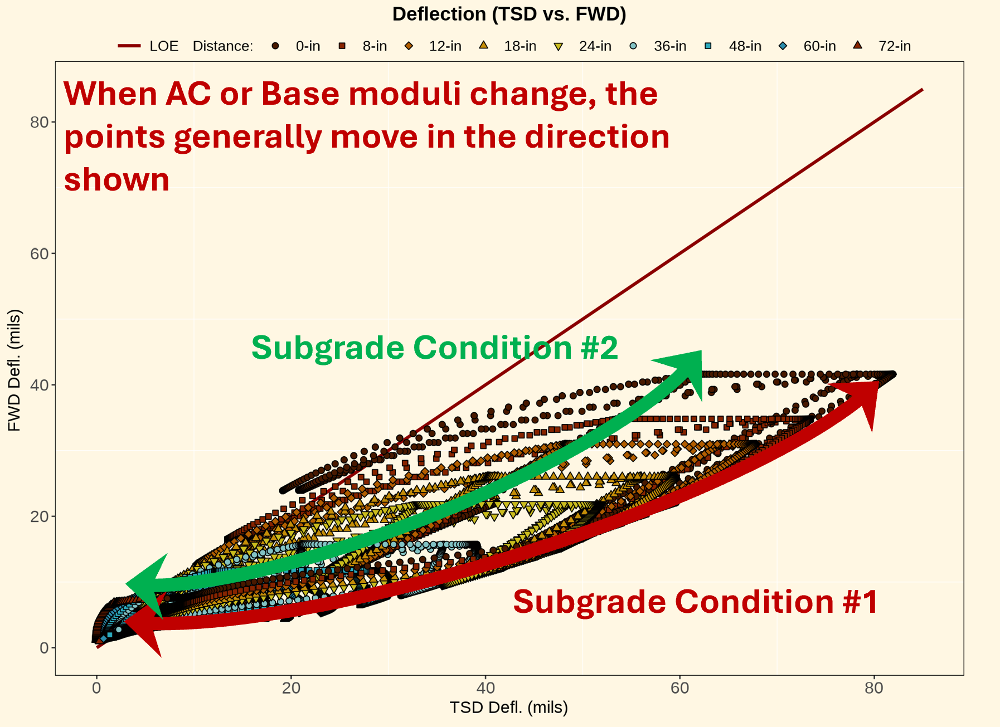
Figure 4. All 1,770 FWD-vs-TSDD deflection comparisons. What happens when AC and/or base modulus changes for a given subgrade condition.
What does that mean? It means that you might be able to establish a decent correlation for a given subgrade condition. However, when the exact same pavement (i.e., same thickness & modulus for both AC & base) is sitting on a different subgrade, you will get a completely different correlation. In other words, when subgrade modulus or thickness changes, the entire FWD-vs-TSDD deflection relationship will shift left or right as indicated in Figure 5.
So, how would you develop a correlation between FWD and TSDD deflections for a variety of pavements? Remember, the AC and base thicknesses were never varied in this simulation. So, imagine what is going to happen once you start varying AC, base, and subgrade thicknesses altogether. The correlation will likely look much worse than what you see in Figure 4 or 5.
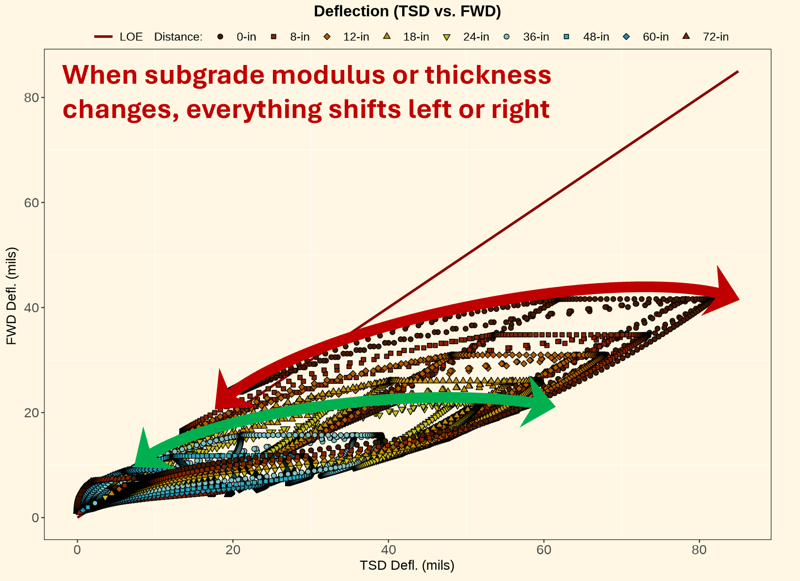
Figure 5. All 1,770 FWD-vs-TSDD deflection comparisons. What happens when subgrade thickness or modulus changes.
3.2 Why does the subgrade change the entire relationship or correlation?
The keyword here is “INTERACTION”. Under moving dual-tire/full-axle/full-truck configurations, stress and response fields from multiple tires start interacting (or overlapping if you prefer this terminology) within the pavement system.
Consider the dual tires of a half-axle shown in Figure 6. Each tire would have its own influence zone (note that this influence zone is over-simplified here as it is only intended to illustrate the concept). But because the duals are quite close to one another, the influence zones from the 2 tires start overlapping within the AC layer. The consequence is shown in Figure 7 where the deflection is plotted along the transverse direction. See the “w” shape deflection below the tires? That shape is due to the interaction.
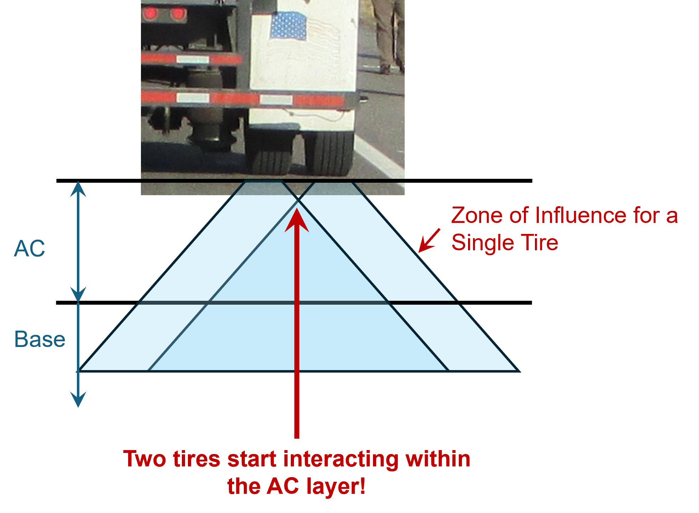
Figure 6. Interaction of dual tires due to influence zone overlapping.
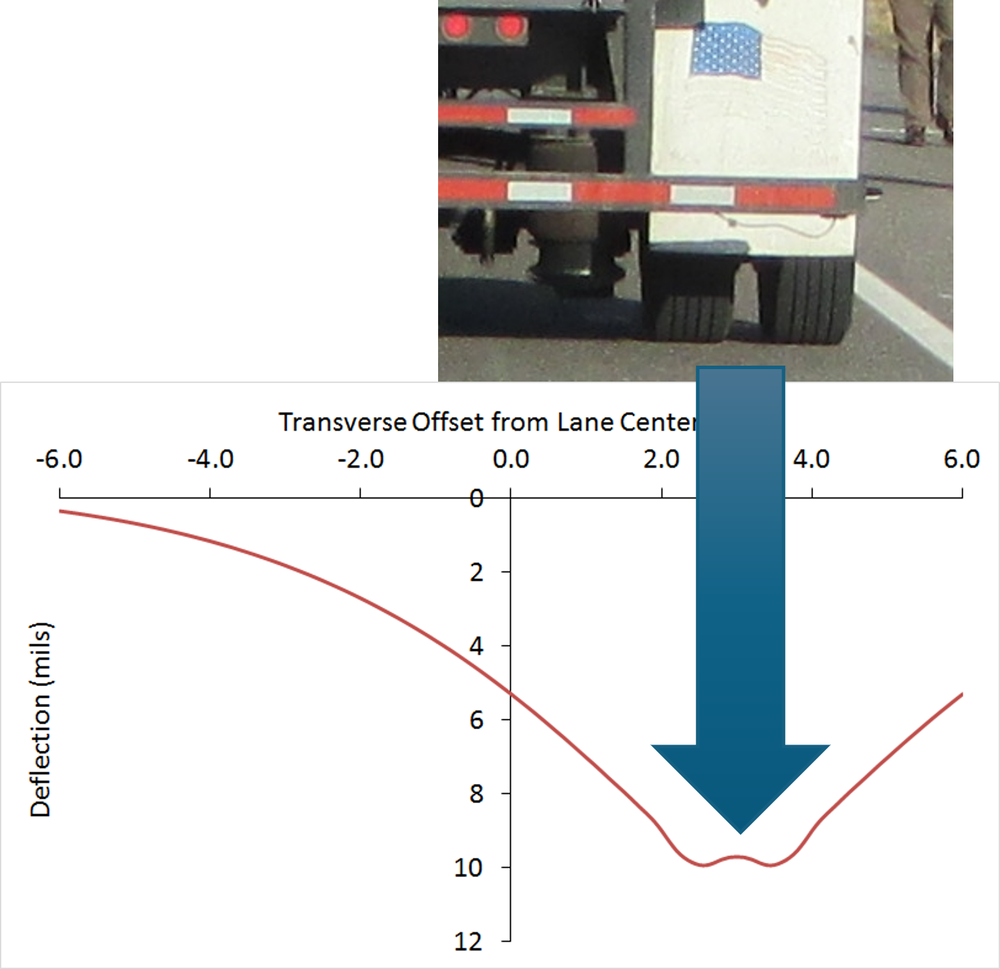
Figure 7. Simulated response under dual tires showing interaction (w-shaped deflection).
But that is not the end of the story. The 2 tires shown in Figures 6 and 7 only correspond to one half of the full axle (i.e., half-axle). There are 2 more tires on the other side! Figure 8 shows the full-axle with 4 tires and the influence zones (again, the influence zones are over-simplified here) from all tires. See where the interactions occur? Again, the dual tires on each side of the axle start interacting within the AC. But more importantly for this figure, the 2 half-axles start interacting within the subgrade layer.
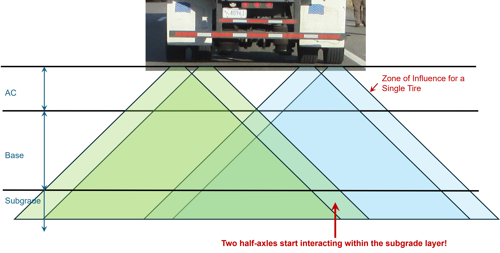
Figure 8. Interaction of dual tires due to influence zone overlapping.
So, what happens due to this interaction between the 2 half-axles? As shown in Figure 9, the overall response or deflection under this full-axle, when plotted along the transverse direction, shows a much larger “W” shape. Fortunately or unfortunately, given the typical configuration of modern truck/trailer systems and the typical pavement thicknesses we have nowadays, this interaction between the 2 half-axles is almost always going to occur in the subgrade layer.
So, what’s the catch here? The TSDDs are generally instrumented on one side of the vehicle (i.e., on one of the half-axles). However, it doesn’t mean it is only measuring the response under that instrumented half-axle. The instrumentation feels the entire axle due to the interaction. This significance or the degree of this interaction is largely dependent on the subgrade because that’s where the interaction occur!
On the flip side, FWD is always applied on a single plate. So, there is no interaction from multiple loads whatsoever. So, the discrepancies that you see in Figures 6 and 7 between the FWD and TSDD deflections are primarily caused by the subgrade where the interaction between the 2 half-axles take place.
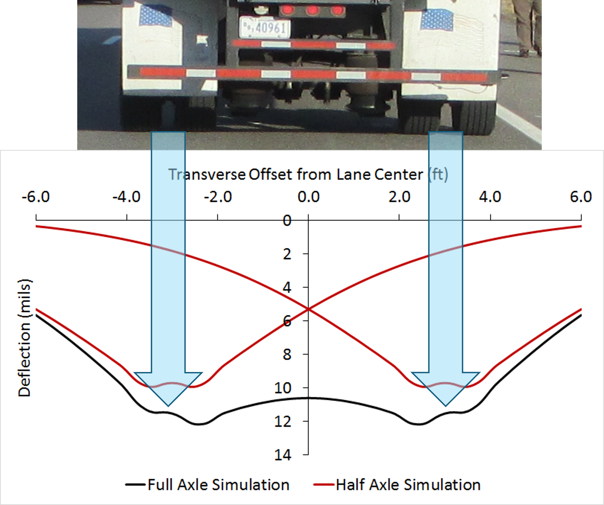
Figure 9. Interaction of dual tires due to influence zone overlapping.
MYTH #1 VERDICT — BUSTED!
4. Myth #2 — TSD deflection slopes can be integrated to provide deflections
This statement almost sounds trivial mathematically. The deflection slope is nothing but the derivative of the deflection, D(x), with respect to x. Therefore, calculus says we can simply differentiate the deflection curve to obtain the slope curve we want. Mathematically, this relationship is written as the following.
\[ S(x) = \frac{\partial D(x)}{\partial x} \tag{2}\]
Yes, it is true. As illustrated in Figure 10, if you start with a known deflection curve, you will end up with a unique slope curve. But does it work the other way around?
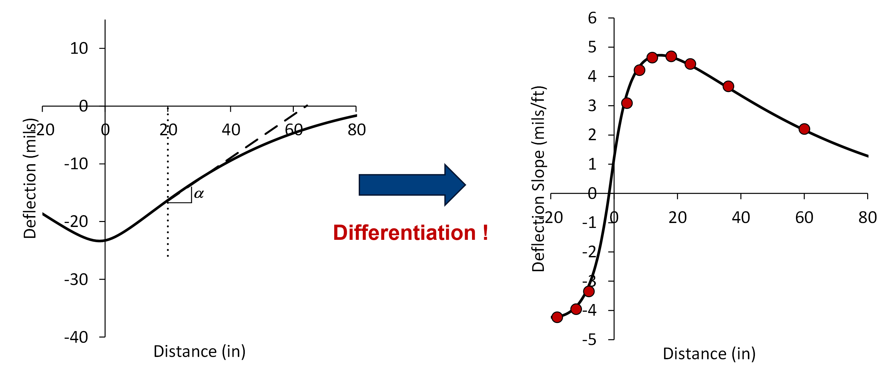
Figure 10. Differentiation of a deflection curve always results in a unique slope curve.
Well, all we had to do to obtain the slope curve from a deflection curve was to differentiate the deflection curve. So, all we have to do to obtain the deflection curve from a slope curve is to integrate the slope curve. Right…? The answer is no, No, NO, and Hell NO!
Recall from your calculus class... When you integrate a function mathematically, it always comes with an “Integration Constant”. So, the correct mathematical notation for integrating the slope curve to obtain the deflection curve, is given as the following.
\[ D(x) = \int S(x)\,dx + C \tag{3}\]
where C is the unknown integration constant. What does this mean? It means we can end up with an infinite number of deflections unless we know what the C value is specifically. This is illustrated in Figure 11. All of the 3 deflection curves shown on the right-hand-side came from the single slope curve shown on the left-hand-side. Depending on the value of C, the integrated deflection curve can be placed anywhere in the vertical direction. So, which one is the correct deflection for us to use? The answer is none of them because we do not know the C value.
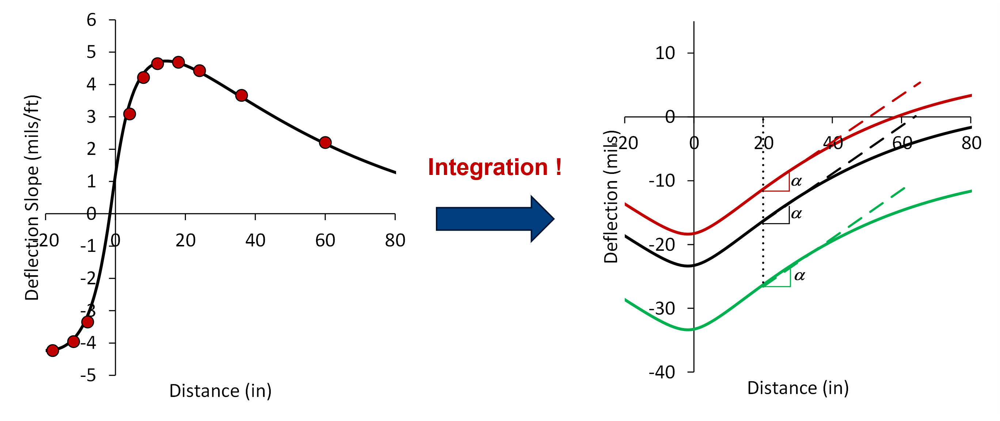
Figure 11. Integration of a deflection slope curve results in an infinite number of deflection curves.
4.1 The reference-sensor assumptions
Well… If we do not know the integration constant C we need for integration, how are we integrating the slope to get the deflections from TSD?
One thing we also need to discuss before the integration process is that all TSDs have one or more “Reference Doppler Sensor(s)”. The Reference Sensor measurement is subtracted from all other doppler measurements, and it is not reported to the end user. I do not want to dive too deep into this, but let’s just say this is needed to correct for the vehicle motion (i.e., so that we can see the pavement response rather than the vehicle response). Most of the recent TSDs have this reference sensor located at approximately 121.0 in. from the instrumented axle (i.e., xref = 121 in).
There are 2 primary assumptions behind how the slopes are being integrated today. These assumptions are mathematically expressed as the following.
\[ D\left(x_{\mathrm{ref}}\right) = 0 \tag{4}\]
and
\[ S\left(x_{\mathrm{ref}}\right) = 0 \tag{5}\]
Yes, that’s just me trying to look fancy with those equations. All in all, it only means that both the deflection (Equation 4) and the deflection slope (Equation 5) are assumed to be ZERO at the reference sensor location.
So, how is the integration carried out and what is the effect of the above assumptions? For those of you that want to learn more, I made a separate graphic on this topic which you can download from my ResearchGate site: TSD_Integration. We will keep the discussion here relatively brief and focus on the consequences of the above assumptions.
The Zero-Deflection assumption in Equation 4 basically shifts the entire deflection curve up or down such that the deflection at the reference sensor location crosses the x-axis. This is illustrated in Figure 12. I am going to call this the “Shifting Error”.
The absolute deflections (e.g., D0, D8, … , D72) you get from integrated TSD deflections are always affected by this “Shifting Error”!
One thing to note about the shifting error is that it does not affect some of the frequently used Deflection Basin Parameters (DBPs). As an example, the Surface Curvature Index (SCI) which is defined as D0 – D12, is clearly not affected by this shifting error because both the D0 and D12 get shifted by the same amount, and the shifting error naturally cancels out in the calculation.
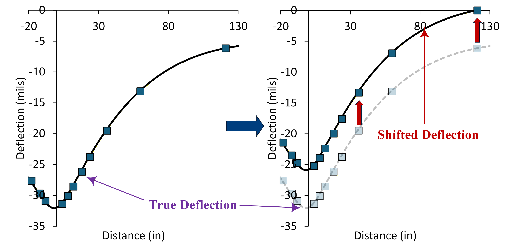
Figure 12. Zero-deflection assumption shifts the entire deflection up or down.
The Zero-Slope assumption in Equation 5 rotates the entire deflection curve about the reference sensor location, forcing the non-zero slope at the reference sensor location to become zero. This is illustrated in Figure 13 and I will call this the “Rotation Error”.
Unlike the shifting error, this rotation error affects everything including the DBPs. Going back to the DBP example we had up there, the D0 and D12 needed for calculating the SCI are not shifted by the same amount when this rotation happens.
The “Rotation Error” affects EVERYTHING including absolute deflections (e.g., D0, D8, … , D72) and relative deflections or Deflection Basin Parameters (DBPs)!
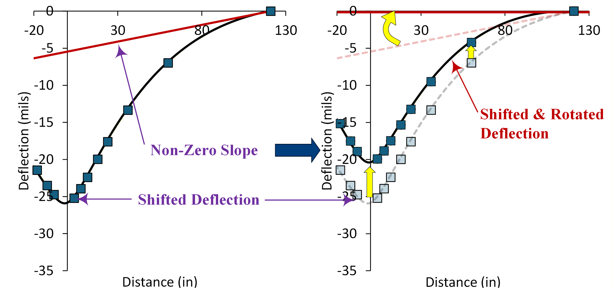
Figure 13. Zero-slope assumption rotates the deflection about the reference sensor location.
4.2 Can the integration be improved?
Do you believe in the Zero-Deflection assumption in Equation 4 and/or the Zero-Slope assumption in Equation 5?... I do NOT! Well… then is there a different way we could integrate the deflection slopes? Possibly!
Again, because I do not believe that both the deflection and deflection slope should be zero at the reference sensor location, I decided to try something slightly different. First, I wanted to recover (if possible) the non-zero slope at the reference sensor location and second, I wanted to assume that the deflection was zero further away from the TSD axle.
These thoughts led me to what I would call a “Two-step Cubic Hermite Spline Fitting” procedure. Sounds fancy but it only means that I am doing the cubic spline fitting twice. This process is graphically illustrated in Figure 14.
The first spline is fitted through the measured slopes plus another location further away from the reference sensor (say 400 in.) where the slope is assumed to be zero. The only purpose of this first spline is to estimate the nonzero slope at the reference sensor.
The non-zero slope at the reference sensor location estimated from the first spline is added to all of the measured slopes (because this value was subtracted during measurement).
A second spline is then fitted through the corrected slopes and the estimated slope at the reference sensor. The location where the slope was assumed to be zero during the first spline fitting (again, say 400 in. to be consistent with what I had in Step 1) is also included. This second spline is used for numerically integrating the deflection slope.
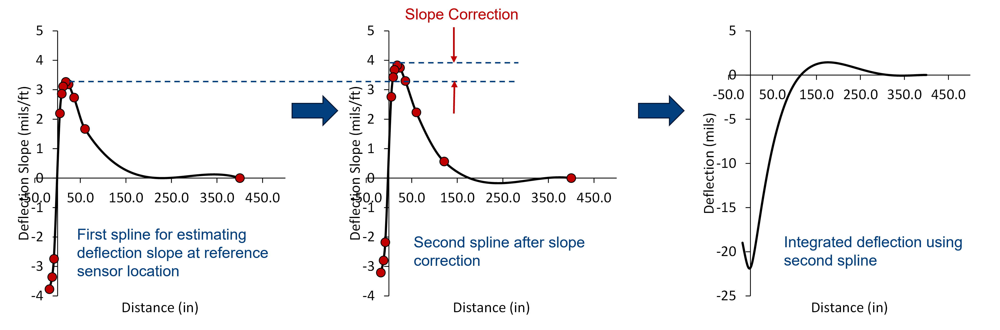
Figure 14. Two-step cubic Hermite spline concept used to estimate the reference sensor slope before integration.
So essentially, I used a different location for the zero-deflection and zero-slope assumption. The above text shows I used 400 in. for this new location, but I actually used several different locations at 172, 300, 400, and 500 in. were tested. The 172 in. location may sound like a weird location, but it is the location that is halfway between the driving axle and the TSD axle for ARRB’s most recent TSD configuration. In any rate, all these “new reference locations” resulted in similar results, so I will only provide those from 400 in. as the new reference location.
Here is an animation that compares the true (i.e., the 1,770 DSteele deflections obtained from Myth #1 along with the current integration practice and my “NEW” integration process described above.
Animation 3. Conventional vs. new integration method (Animation_3_LinkedIn_Post).
I hope the above animation gave you enough evidence, but if not… Figure 15 shows a typical outcome of what was in the animation. The new method (two-step spline method) improved both the slope and the integrated deflection, meaning that it helped the results get closer to the true results (which in this case was DSteele results for the 1,770 pavements simulated herein). But looking at the integrated deflection results, this is not acceptable. Again, I am only showing you the results from the new reference location being at 400 in., but trying different reference locations (from 172 in. to 500 in.) did not improve this any further, and in fact, many of those actually got worse – Mark my words for this!
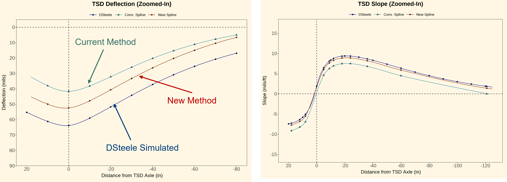
Figure 15. Screenshot of Animation 3. Closeup and frozen view of deflection and slope.
MYTH #2 VERDICT — ABSOLUTELY BUSTED!
5. Myth #3 — You MUST consider all TSDD axles (or tires) in your model
The above myths dealt with 2 fundamental questions: (1) how TSDD response differs from FWD response and (2) whether the TSD deflection slopes can be integrated to provide absolute deflections. The third myth turns to a more practical modeling question.
When we simulate a TSDD, do we really need to model the entire truck and trailer?
At this point, I would like to emphasize that this myth is limited to forward simulation only. Backcalculation is a different problem, and we will deal with that separately in Myth #4.
The motivation for asking the above question is primarily due to computational efficiency. A full TSDD model (i.e., truck and trailer) will contain multiple axles and many individual tire loads. If our primary interest is the pavement response near the instrumented TSD axle, it is tempting to ask whether we can simply model that axle and ignore the rest of the vehicle. A reduced model can be considerably more efficient, particularly when thousands of forward simulations are required for sensitivity studies, optimization, backcalculation development, or even AI/ML training.
But Myth #1 already gave us a reason to be cautious. We saw that pavement response is not controlled only by what happens directly beneath an individual tire (or half-axle). Stress and deformation fields spread through the pavement structure, and their interaction can become especially important in the deeper layers. In fact, the interaction between the two half-axles was one of the reasons the relationship between FWD and TSDD deflection became strongly dependent on the subgrade. In Myth #3, I am asking essentially the same question at a larger spatial scale. How much do the other axles of the TSDD influence the response measured near the TSDD axle?
5.1 Can We Simulate Only the TSD Axle?
Figure 16 shows an example comparison of the deflections obtained from a single tire and the full TSD models. You can clearly see the deflections due to the additional axles (i.e., steering and driving axles) within the full TSD model that are not present in the single axle model. The more important observation, however, is what happens near the TSD axle itself. The two deflection curves are not identical, but they seem really close to one another. Right?
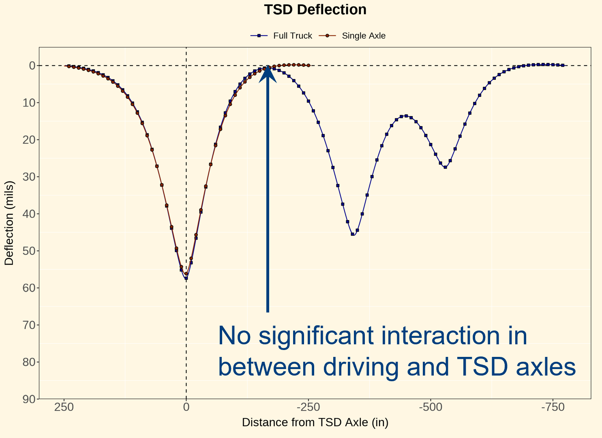
Figure 16. Deflections from single axle and full TSD models with minimal interaction between TSD axles.
The results shown in Figure 16 may seem encouraging for the single-axle approximation at first glance. If the response around the measurement axle is nearly the same, why can’t we ignore all the other axles and save some time in running those simulations? Well… the particular example shown in Figure 16 shows minimal interaction between different axles of the TSD. The real problem is that the amount of interaction is not always minimal like the one shown in Figure 16. As the pavement structure changes and the amount of interaction becomes more significant between different axles, the influence of the driving axle(s) on the response near the TSD axle also changes.
For most pavements, the interaction between different axles becomes much more noticeable than what is shown in Figure 16. See Figure 17 as an example which shows some significant interaction between the TSD axles. You can clearly see that the deflection from the single axle model may not be as good as what it was in Figure 16. Once again, it is the pavement structure, particularly the deeper supporting layers, that controls how broadly the response from one axle spreads before it begins interacting with the response from another axle.
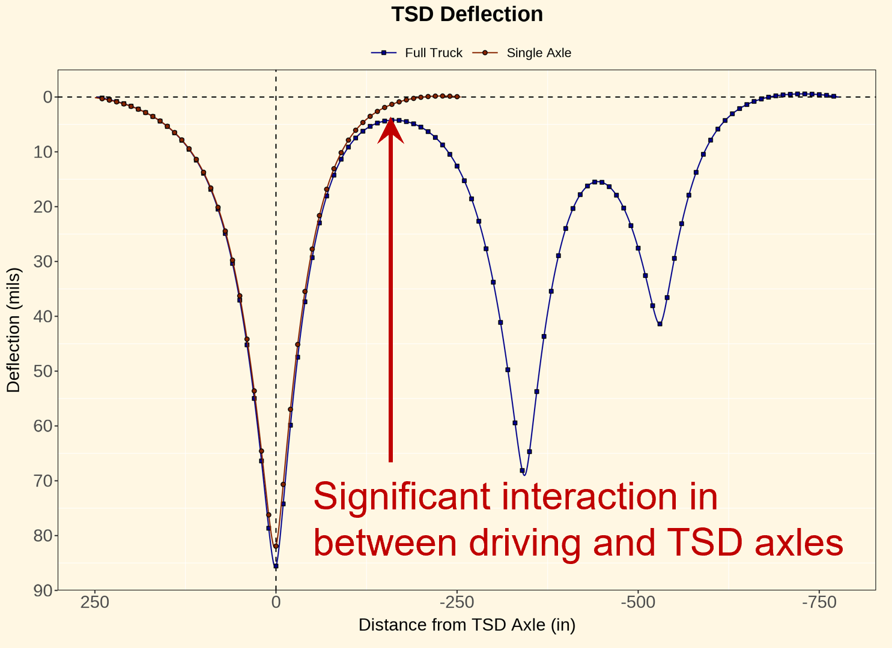
Figure 17. Deflections from single axle and full TSD models with significant interaction between TSD axles.
So, Myth #3 is not asking whether the additional axles produce their own deflection basins because they obviously do. The question is whether the additional axles of the TSDD affect the response at the location we have the TSDD measurement system, and, if they do, whether the resulting error is large enough to matter for the intended application.
5.2 Quantifying the Forward-Simulation Error
For this Myth, I used the same 1,770 pavement structures I had in Myth #1 and simulated each structure twice, first with the full TSDD vehicle and again using only the TSDD axle. This provides a very clean way for me to compare the deflections from both models directly (or side-by-side). Here is the animation that shows the deflections from all 1,770 pavement structures.
Animation 4. Full TSD vs. single-axle forward simulation (Animation_4_LinkedIn_Post).
I hope the animation helped you to see that sometimes the single axle model may be just fine where as some other times, it is just not good enough. Well then, the next question we need to ask is how do these deflections and deflection slopes between the 2 models actually compare?
Figure 18 shows the 1:1 comparison of the deflections at different offsets from the axle. Looks pretty good, right? Then what about the actual error? Figure 19 shows the percent error that I calculated for different offsets from the TSDD axle. Looking at this figure, I would say that the error from the single axle model mostly ranged from −5.0% to +10.0% over the locations evaluated. One thing to note here, a negative error means that the single-axle simulation is overpredicting the corresponding full-truck response. The 1:1 comparisons (Figure 18) show that the two simulations remain strongly related, but the error distributions (Figure 19) make it clear that the single-axle solution is not identical to the full-truck solution.
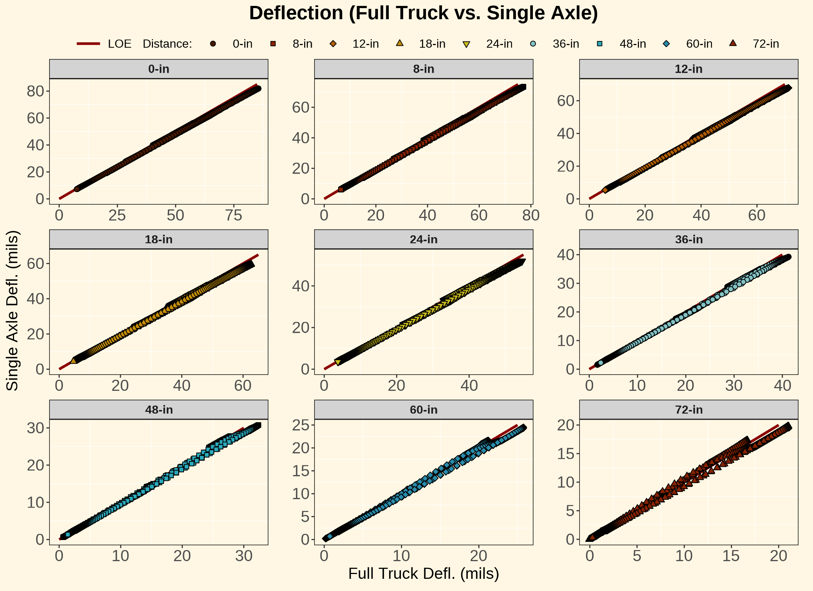
Figure 18. Comparison of single axle vs full TSD model deflections at different offsets.
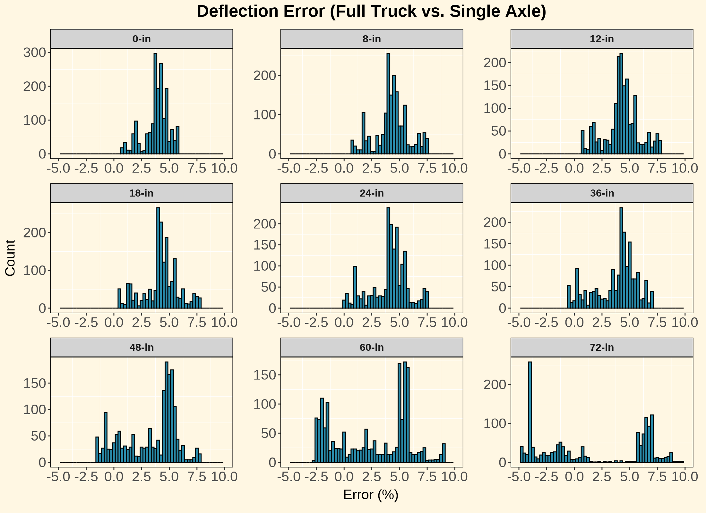
Figure 19. Deflection error observed from single axle modeling.
The same comparison was made using TSD deflection slope. See Figure 20 for the 1:1 comparisons of the deflection slope and Figure 21 for the resulting errors. For the TSD configuration evaluated here, the single axle model resulted in deflection slope error mostly between −4% and +10%.
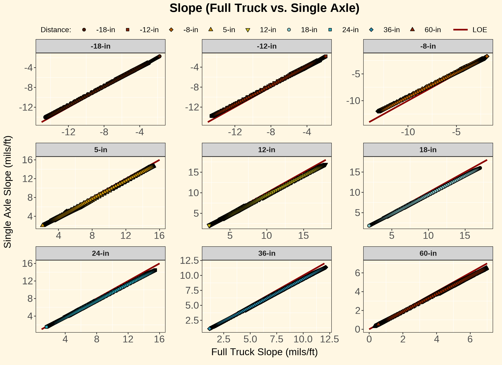
Figure 20. Comparison of single axle vs full TSD model deflection slopes at different offsets.
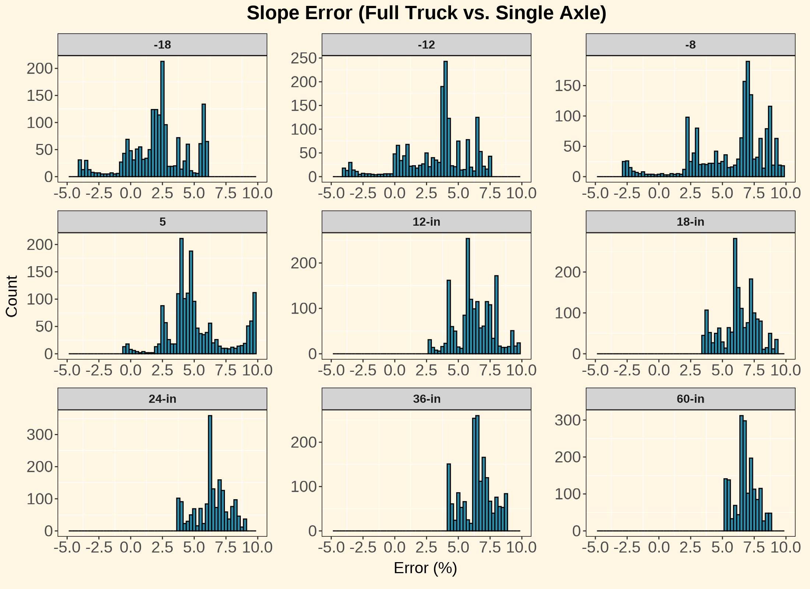
Figure 21. Deflection slope error observed from single axle modeling.
MYTH #3 VERDICT — CONFIRMED / PLAUSIBLE
This myth is CONFIRMED if the objective is to avoid the simplification error or if you are not willing to tolerate any error.
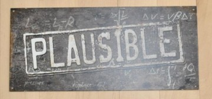
This myth is PLAUSIBLE if a quantified amount of error is acceptable in exchange for computational efficiency.
6. Myth #4 — TSD deflection slopes can be used for backcalculating layer moduli, including subgrade modulus
Finally, the first three myths have led us toward this myth.
Myth #1 showed that the subgrade plays a major role in the relationship between impact loading and moving load response. In addition, Myth #1 showed that TSDD deflections are not well correlated to FWD deflections.
Remember that the subgrade modulus is one of the most important parameters for pavement design. However, Myth #2 showed that we cannot get the absolute deflections (which we need for estimating the subgrade modulus) by integrating the TSD slopes mathematically.
Myth #3 then showed that simplifying the full TSD vehicle to a single axle during modeling introduces errors in both deflection and slope.
So perhaps we should take a different route, rather than keep trying to get the “absolute deflections” from TSD by integrating the slopes or trying to correlate the TSD deflections to those from FWD.
What if we just use the deflection slope itself?
More specifically, the question we want to ask is if the TSD slopes contain enough structural information for us to backcalculate the pavement layer moduli—including the subgrade modulus? And, based on what we learned in Myth #3, what happens to the backcalculated results if we simplify the forward model to a single TSD axle?
6.1 The Reference Sensor and the Offset Slope
There is one thing I need to emphasize before we talk about backcalculation. As I discussed in Myth #2, the measurement from the reference doppler laser is subtracted from those of all other dopplers to remove the vehicle motion from the measurements. The reported slope response is therefore relative to that reference measurement rather than an untouched absolute pavement slope. See Figure 22 for an illustration.
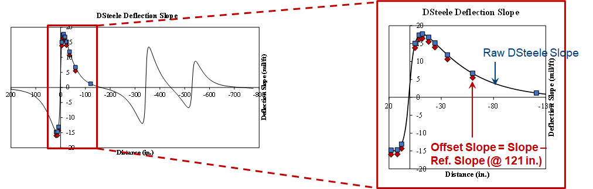
Figure 22. Illustration of offset slope (= Slope – Reference Slope).
So, to be consistent with what the TSD is actually doing, I have used the offset slope for backcalculation herein. Mathematically, the offset slope, Soffset, is nothing but the following.
\[ S_{\mathrm{Offset}}(x) = S(x) - S\left(x_{\mathrm{ref}}\right) \tag{6}\]
One more thing I would like to ask the TSD community.
For future development including mechanistic backcalculation, optimization, and AI/ML surrogate models… I recommend treating offset slope as the response quantity rather than the raw slopes you get from your models. That is what the equipment is doing, so why wouldn’t you account for it in your model?
6.3 The Backcalculation Experiment
The same 1,770 synthetic pavement structures used in the previous myths were used for this myth again. Because the true AC, base, and subgrade moduli were known for every structure, the backcalculated moduli could be compared directly to their “true” values.
Two separate backcalculation efforts were conducted. First, the complete TSD vehicle was represented in the forward model for backcalculation. Second, the forward model was simplified to the single TSD axle and the backcalculation was conducted again. One thing to note is that only one set of seed moduli was used for all 1,770 × 2 backcalculations. This is worth emphasizing because the initial guesses were not tuned separately for individual pavement structures. The backcalculation results, or more specifically the layer moduli as well as the backcalculated deflections and slopes, are shown in the following animation.
This animation seems to be “glitching”? Don’t worry. There is nothing wrong with your computer or your smartphone. It is just due to the inherent error in backcalculation.
Animation 5. Full TSD vs single axle backcalculation results (Animation_5_LinkedIn_Post).
6.4 Full Truck Backcalculation Results
The full-truck results were quite encouraging. The true vs. backcalculated layer moduli are shown in Figure 23 and the distribution of errors are shown in Figure 24.
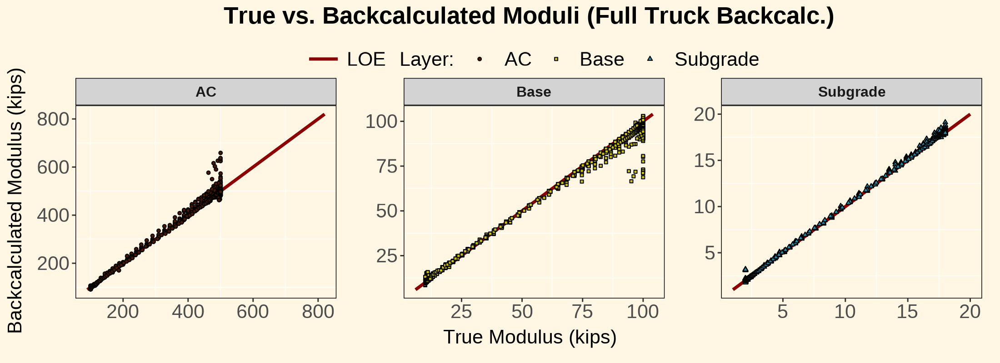
Figure 23. True vs. backcalculated modulus (Full truck model).
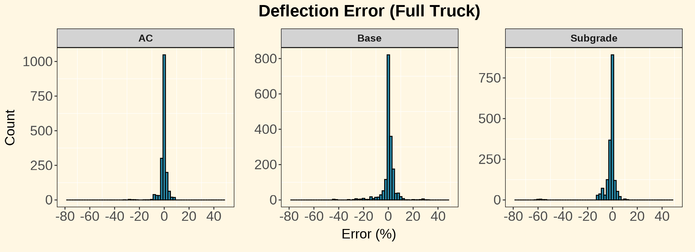
Figure 24. Backcalculation error (Full truck model).
The backcalculated AC, base, and subgrade moduli generally tracked the known target values closely, with errors mostly within approximately ±5%. Most importantly for the central question in this myth, the subgrade modulus was recoverable from the offset-slope response along with the upper pavement layer moduli.
This is significant because Myth #2 showed that absolute deflection cannot be obtained from TSD slope through purely mathematical integration alone. Yet the inability to reconstruct the unique, absolute deflection does not mean that the slopes lost their structural information. The backcalculation results seem to show that the offset-slope pattern itself contains information that can be used to assess pavement layer properties.
6.5 Single Axle Backcalculation Results
The single axle backcalculation tells a slightly different story. The true vs. backcalculated layer moduli are shown in Figure 25 and the distribution of errors are shown in Figure 26. Both these figures immediately show that the results were not as good as the full truck case.
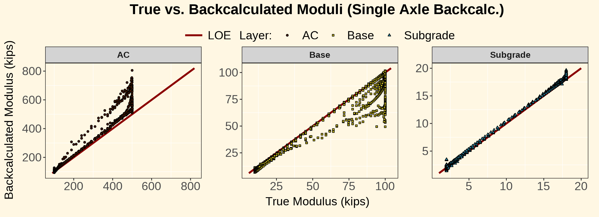
Figure 25. True vs. backcalculated modulus (Single axle model).
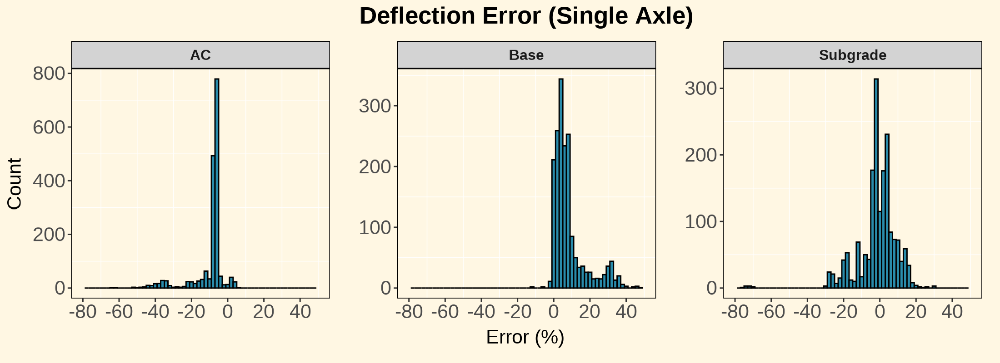
Figure 26. Backcalculation error (Single axle model).
While the full truck backcalculation errors were mostly within approximately ±5%, the single axle backcalculation produced errors that were mostly within ±20%.
This is an important extension of Myth #3. A forward simulation error of several percent may appear relatively modest when we are simply comparing deflection or slope. But backcalculation is an inverse problem. Small differences in the modeled response can propagate into much larger differences in the material properties required to reproduce the response. In other words, the simplification error in the forward simulation does not necessarily remain in the range when we go to backcalculation.
The result therefore reinforces the importance of matching the forward model to the actual TSDD configuration when the objective is structural backcalculation. A reduced single axle model may still be useful, but the computational savings come with a much larger uncertainty in the backcalculated layer moduli.
6.6 An Important Clarification: This does Not mean ±5% backcalculation error when we use field data
The full-truck result needs one very important clarification. The ±5% error observed here should not be interpreted as evidence that TSD backcalculation with field data will produce backcalculated pavement moduli within ±5%.
The results I showed you here are controlled synthetic, matched-model backcalculations. The pavement response was generated using the same general theoretical framework used in the backcalculation analysis, the layer thicknesses were known without errors, and the true moduli were known exactly. Under these conditions, the study primarily tests whether the offset-slope response contains sufficient information for backcalculating the input properties.
Field measurements introduce additional sources of uncertainty that are not represented in this synthetic experiment such as measurement noise, load and speed variation, pavement temperature, uncertainty in layer thickness, viscoelasticity of AC, nonlinear or stress-dependent unbound materials, and other device- and site-specific effects.
So the conclusion from this myth is not to say that TSD backcalculation with field data can be performed with about ±5% error. The conclusion is narrower and, I think, more importantly at this stage (under a controlled mechanistic framework), TSD offset slope contains sufficient information to recover the AC, base, and subgrade moduli. Field validation is the next step.
MYTH #4 VERDICT — CONFIRMED / PLAUSIBLE
For full truck matched-model synthetic backcalculation, Myth #4 is CONFIRMED. The TSD offset slopes contained sufficient structural information to backcalculate the AC, base, and subgrade moduli, with errors mostly within approximately ±5% for the 1,770 pavement structures evaluated here.
For single axle backcalculation, the myth is PLAUSIBLE at best. The recovered moduli showed substantially greater error, mostly within ±20%. Whether that level of error is acceptable depends on the intended application and your engineering judgement.
7. The Four-Myth Scorecard
Taken together, I hope the 4 myths tell you a connected story about how TSD measurements should be interpreted and modeled.
Myth #1 showed that TSDD and FWD responses are not simply interchangeable. Myth #2 showed that although TSD measures deflection slope, absolute deflections cannot be obtained through purely mathematical integration without additional, mechanistic- or physics-based guidance. Myth #3 then moved to forward simulation and showed that simplifying the TSDD vehicle to a single axle can provide substantial computational efficiency, but at the cost of increased error. Finally, Myth #4 showed why that distinction becomes even more important in backcalculation – a relatively modest error in forward simulation can translate into a considerably larger error in the backcalculated layer properties.
Collectively, these results point to a common lesson: TSD slope is a structurally informative measurement in its own right, but extracting reliable pavement properties from it may require a more mechanistic framework that properly represents the pavement system, the measurement reference, and the loading configuration.
Table 3. Summary of the 4 myths discussed in this article.
| Myth | Verdict | Main takeaway |
|---|---|---|
| Myth #1: FWD and TSDD deflections correlate well | BUSTED | A single direct relationship is not generally transferable; subgrade condition strongly affects the relationship. |
| Myth #2: TSD slopes can be integrated mathematically to provide deflection | BUSTED | Unconstrained integration alone cannot uniquely recover absolute deflection; shifting and rotation errors matter. |
| Myth #3: All TSDD axles and tires must be modeled for forward simulation | CONFIRMED / PLAUSIBLE | Full-truck modeling gives highest fidelity; single-axle modeling may be acceptable when quantified error is tolerable. |
| Myth #4: TSD deflection slopes can be used for backcalculating layer moduli | CONFIRMED / PLAUSIBLE | Matched-model synthetic full-truck inversion recovered all layer moduli well; single-axle simplification increased error. |
8. Engineering Implications
These myths suggest that TSD analysis should be approached as a moving load mechanics problem, rather than a “high-speed analogue of FWD”. That distinction has practical consequences for both interpretation of TSD measurements and development of forward and inverse analysis methods.
FWD and TSDD measurements may correlate under defined conditions, but that relationship should not be assumed to remain transferable across pavement structures, particularly when subgrade conditions change.
TSD deflection slope may contain useful structural information in its own right. Converting slope measurements to absolute deflection, however, requires additional information or constraints beyond pure mathematical integration.
Reduced axle representations can provide substantial computational efficiency, but the resulting approximation error should be quantified for the specific TSDD configuration, pavement conditions, and intended application.
For backcalculation, offset deflection slopes should be treated as the equivalent of measured responses.
The broader implication is that TSD slope does not necessarily need to be converted into an FWD-like deflection basin before it becomes useful for pavement evaluation. A mechanistic model that directly predicts the quantities measured by the TSD provides an alternative path: compare measured and predicted slopes in their native form and use those responses directly for structural inference.
9. Limitations and Next Steps
The analyses presented in this article are primarily theoretical and computational. They were intentionally designed to isolate individual mechanics and modeling assumptions so that their effects could be examined independently. Consequently, the results should not yet be interpreted as validation of a complete field-ready TSD backcalculation framework.
The most important next step is field validation. In particular, the slope-based backcalculation approach should be evaluated using measured TSD data from pavement sections for which layer thicknesses and material properties have been characterized. Such comparisons would provide a much stronger conclusion on whether the structural information demonstrated in the synthetic analyses can be extended to field conditions.
Several additional effects should also be investigated, including viscoelasticity of AC layer, nonlinear or stress-dependent behavior of unbound materials, temperature, dynamic axle loading, measurement noise, and device-specific sensor locations and geometry. These factors were intentionally excluded from the analyses presented here.
The conclusions regarding reduced axle configurations should likewise be regarded as configuration-specific rather than universal. The magnitude and spatial distribution of approximation error depend on axle spacing, axle loads, sensor offsets, pavement structure, and the particular TSDD platform. Comparable sensitivity analyses should therefore be performed before adopting a reduced loading representation for another device or application.
10. Closing Thoughts
The four myths explored in this article began as separate technical problems, several of which first appeared in my individual LinkedIn posts. I hope putting these together reveals a more coherent story about how TSD measurements should be interpreted and modeled.
Perhaps the simplest way to summarize the four myths is this: TSDD is not an FWD traveling at highway speed. Although both devices are used to characterize pavement structural response, the loading mechanisms, measurement quantities, and underlying mechanics are fundamentally different. Those differences should be recognized rather than treated as complications to be removed.
That, to me, is the most useful outcome of this exercise. The purpose is not simply to label the myths as Confirmed, Busted, or Plausible for the sake of a Mythbusters-style scorecard. It is to understand why an assumption works, where it begins to break down, and what the underlying pavement mechanics are telling us.
The four myths therefore point toward a broader principle for TSD analysis: work as closely as possible with the physics of the measurement itself. Instead of forcing TSD measurements into the framework of an FWD test, the analysis should recognize the moving load system, the vehicle configuration, the measurement reference, and the response quantities that the TSDD actually measures. Or, stated more simply:
Don’t interpret TSD by asking how closely it can imitate FWD. Interpret TSD based on the mechanics of what TSD actually measures.
11. References
Lee, H.S. and Steele, D. Dynamic Backcalculation of Asphalt Pavement Properties and Simulation of Pavement Response under Moving Loads. Transportation Research Board 96th Annual Meeting. Washington, D.C. 2017.
Steele, D., Lee, H.S., Beckemeyer, C., and Van, Thomas. Moving Wheel versus Impact Deflections and Their Use in Pavement Evaluation. Transportation Research Record. 2021. DOI: 10.1177/03611981211028859